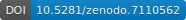

BART: Installation
Figure: Simulated MRI images.
Download
Note: The software is intended for research use only and NOT FOR DIAGNOSTIC USE. It comes without any warranty (see LICENSE for details).
Releases:
It is recommended to download the latest release. All releases can be found here.
Selected releases:
- bart: version 0.9.00 (2023)

- bart: version 0.8.00 (2022) 
- bart: version 0.4.04 (2018)

- bart: version 0.2.08 (2015)

BART has also been included in Debian GNU/Linux (and Ubuntu). The Debian binary package can be reproducibly built from the source code (as distributed by Debian) and can be downloaded from here. There is also a package for the image viewer.
BART is supported on Windows through WSL 2. See the README for up-to-date instructions. More details can be found on the Windows Installation Instructions page.
For developers: the C source code can be found in the Git repository
Installation
Installation of the required libraries, downloading and unpacking of the archive, and compilation on Linux is usually as simple as typing the following commands:
$ sudo apt-get install make gcc libfftw3-dev liblapacke-dev libpng-dev libopenblas-dev
$ wget https://codeberg.org/mrirecon/bart/archive/vX.Y.ZZ.tar.gz
$ tar xzvf vX.YY.ZZ.tar.gz
$ cd bart-X.YY.ZZ
$ make
See the README file included with the source code for further instructions and for Mac OS X and Windows.
If you are a Docker user you can also start with this extremely simple Dockerfile.